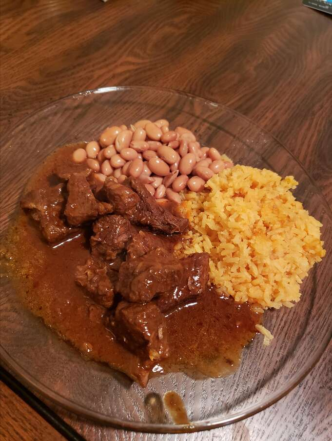

Chile Colorado recipe

Description
Chile Colorado is a traditional Mexican dish of beef or pork that is stewed in a red chile sauce until fall-apart tender. The term “colorado” in Spanish means “colored red” – so don’t mistake this as a chili recipe from the state of Colorado
Ingredients
- 9 New Mexico dry chiles - washed, with stems and seeds removed
- 3 cups water
- 5 pounds boneless beef chuck roast, trimmed of fat
- ½ cup all-purpose flour
- 1 tablespoon kosher salt
- 1 tablespoon black pepper
- 3 tablespoons olive oil
- 1 large yellow onion, chopped
- 2 cups beef stock or water
Steps to follow:
- Place chiles and 3 cups water into a medium stockpot, and bring to a boil. Remove from heat and steep for 30 minutes to soften. Strain into a bowl, reserving the cooking liquid. Place the chiles and some of the liquid into a blender, and puree until smooth. Add more liquid as necessary to form a smooth sauce. Pass sauce through a fine mesh strainer to remove any seeds and the tough skins; set aside.
- Cut the roast into 1 to 2 inch chunks. In a medium bowl, combine flour, salt, and pepper. Dredge the beef chunks in the seasoned flour; set aside.
- Heat olive oil in a large pot over medium heat. Saute onion until tender and translucent, about 5 minutes. Add beef chunks a few at a time, so as not to overcrowd the pot, and cook until evenly brown. Remove cooked meat, and continue browning remaining meat. Return reserved cooked meat to the pot. Stir in pureed chile mixture. Add beef stock to just cover beef chunks, or to personal preference. Bring to a boil over medium heat. Reduce heat to lowest setting, and simmer for 3 hours, or until meat is tender. If necessary, adjust with more stock during cooking.